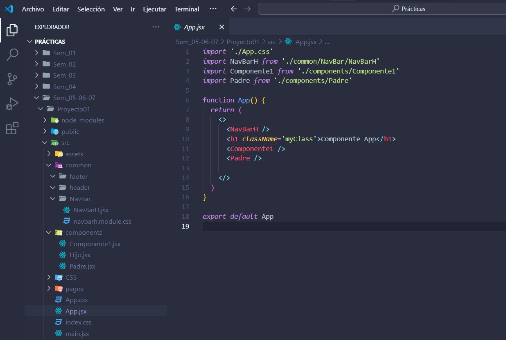

INTRODUCCION AL DESARROLLO CON REACT
En esta semana 5 hablaremos acerca del desarrollo con React un resumen de todo lo visto
DEFINICIONES
¿Qué es REACT? Framework frontend
Es una biblioteca de JS para crear interfaces de ususario
Se utiliza para crear SPA aplicaciones de una sola página
REACT nos permite crear componentes de interfaz reutilizables
¿Cómo funciona REACT?: Crea un DOM virtual en la memoria
- Primero modifica el DOM virtual antes de hacer cambios en DOM navegador
- React solo cambia lo que necesita ser cambiado
- React descrubre lo que fue cambiado
Si quisieraa utilizar REACT recuerda que debes tener instalado npm y node.js instalado
- Para usar REACT necesitas dos librerias: REACT Y REACTDOM
- Podemos utilizar REACT directamente en HTML incluyendo scripts y etiquetas definidas
INSTALACION DE NODE JS
Para realizar la instalacion en tu equipo lo unico que necesitas son estos pasos- Ingresar a esta url : NODE JS
- Descargar el archivo version LTS
- Ejecutar como administrador
- Dar en NEXT en todo el proceso de instalación
- Habra una ventana que te muestre un cuadro para activar el check desactiva esa opción
- Finalmente terminar la instalación
DOCUMENTACION REACT
Podemos encontrarlo en el siguiente URL : REACT DVHERRAMIENTAS DE REACT
Para trabajar con REACT JS es necesario conocer con que herramientas necesitamos trabajarEcosistema de desarrollo con REACT:
- Babel JS: Transforma nuestro codigo JS a código JS para nuestro navegador
- ESLint: Herramienta que revisa y observa tu codigo errores que pueden afectar.
- Sass: Metalenguaje de hojas de estilo , lenguaje script traducido al css
FONT AWESOME
Utilizado para sustituir imagenes por iconos nos es necesario el uso de JAVASCRIPT ello ya lo Utilizamos en anteriores semanas.Otros similares tenemos a FAVICON
HERRAMIENTAS DE INSTALACION REACT
Para evitar los problemas con la isntalacion manual y poder tener errores se tiene lo siguiente:- Create-react-app
- Vite
- Next JS
Para crear documentos con las tres herramientas mencionadas realicemos lo siguiente:
CREATE REACT APP
Ingresa en el cmd : npx create-react-app nombreProy
Ahora ingresamos al proyecto con: cd nombreProy
Finalmente ejecutamos: npm start
VITE
Ingresa en el cmd : npm create vite nombreProy
Ahora ingresamos al proyecto con: cd nombreProy
Finalmente ejecutamos: npm install y luego : npm run dev
NEXT.JS
Ingresa en el cmd : npx create-next-app nombreProy
Ahora ingresamos al proyecto con: cd nombreProy
Finalmente ejecutamos: npm install y luego : npm run dev

PROCEDIMIENTO
Para esta semana el procedimiento que se tuvo en cuenta fue el de aprendren sobre REACT las
bondades que nos ofrece en el desarrollo de paginas web y aplicaciones.
Algunos de lo que debemos revisar y aprender es lo siguiente:
- ¿Qué es REACT?
- Como funciona REACT
- Que herramientas necesito para utilizar REACT
- Como es estructura REACT
- Como son los distintos proyectos con REACT

RESULTADOS
Con esta semana 5 nosotros tenemos nocion de que es un FRAMEWORK REACT y que podemos realizar con el.
- Tendremos conocimiento sobre que es REACT yrelacion con JS
- Sabremos acerca de lo que se necesita para poder utilizar REACT (NODE.JS)
- Sabremos como realizar la instalcion de la herramienta NODE.JS
- Conoceremos un poco mas sobre la fuente de iconos como FONT AWESOME
- Podremos crear proyectos con VITE , CREATE REACT APP y NEXT.JS
- Conoceremos la estructura de cada proyecto.